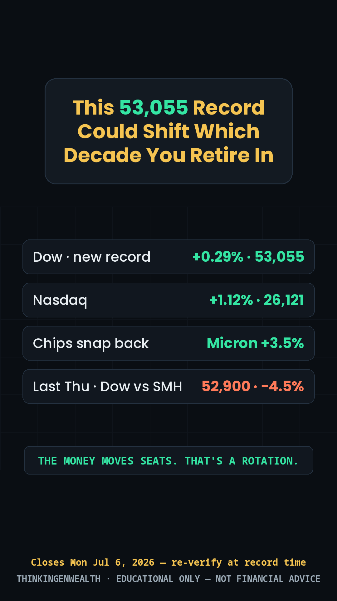
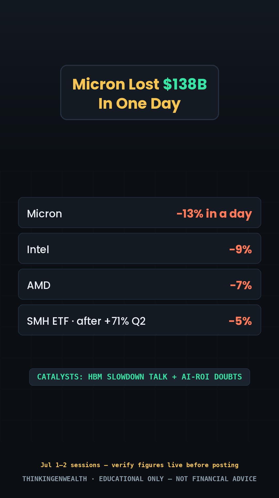
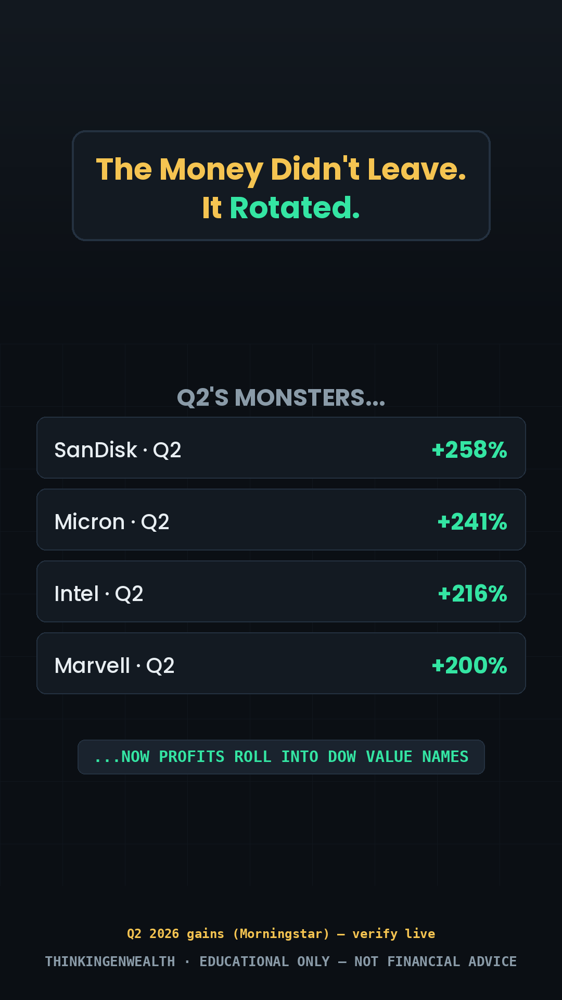
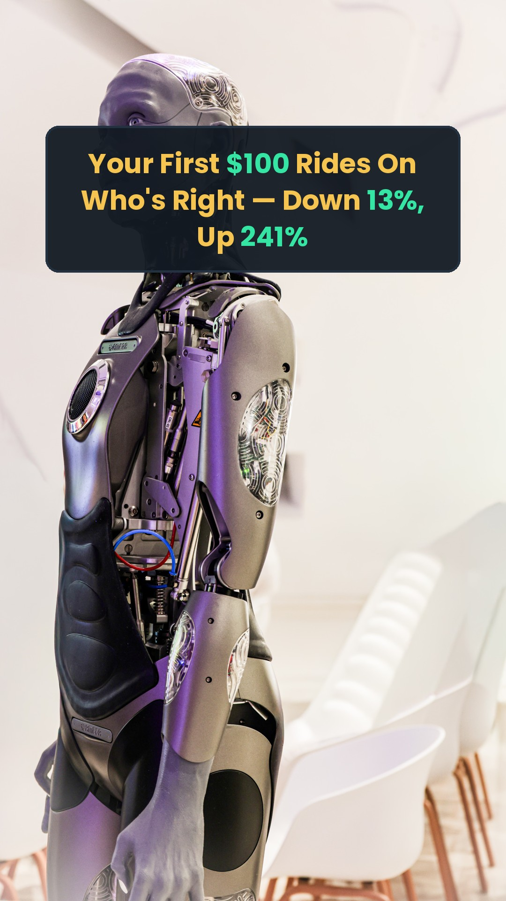
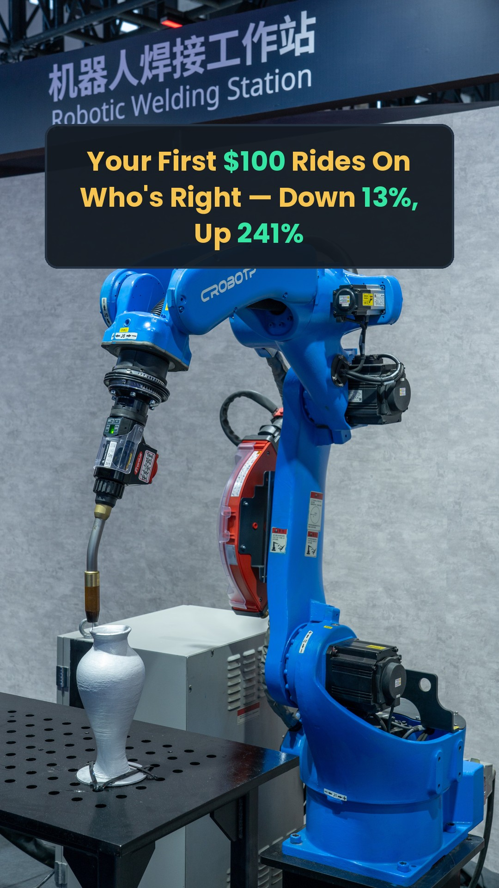

THINKINGENWEALTH · GENTHINKERS
broll/<DAY>/captioned/ (raws beside; previews in each day card below; cut orders in greenscreen-and-hooks.md). Data tiles stay for beats that need OUR numbers.The rotation flagship records TODAY Tue Jul 7 with Monday's fresh closes; the chart-read co-ep records Wed. This week is the rollout + the minutes-day spike.
Riverside clips → the TikTok ladder, the YouTube long-form + 3 Shorts, IG Reels, 3 Community posts.
Rotation flagship Tue PM · minutes reach-spike Wed 2pm · evergreen Thu · credit Fri · collab Sat · chart ep banked for Sun.
The big story in our lane: the Great Rotation — now with a third act. Last Thursday (Jul 2) the Dow jumped +594 to a record 52,900 while chips fell a second straight day (SMH −4.5%) — after Micron lost ~$138B in one session (−13%, Jun 23). Then Monday Jul 6 the Dow closed above 53K for the first time (53,055.91, +0.29%) while chips snapped back (Micron +3.5% to ~$1,009 · Broadcom +4.8% · Nasdaq +1.12% to 26,121) on Foxconn's stronger-than-expected AI-driven sales; Samsung's Tue-AM guidance then printed a record ~₩89.4T operating profit (~19× YoY) — stock down 6%+ on profit-taking anyway. Washout → record → snapback: a rotation breathing, the cleanest teaching arc the market has served in years. Mid-week marquee: FOMC minutes Wed Jul 8, 2:00pm ET — Warsh's first meeting, and with the dot + forward guidance gone, the minutes are the only tell left. Fri: Delta opens earnings season — confirmed Fri Jul 10 pre-market, call 10am ET (Levi's Wed, PepsiCo Thu — verify times). Next up: June CPI Tue Jul 14 · FOMC Jul 28–29. Sources: yahoo finance · cnbc · thestreet · alphastreet · bls.gov · federalreserve.gov — verified Jul 7 AM; re-verify at record time.
A record Dow (now 53,055.91 — first close above 53K, Mon) after a chip washout (Micron −$138B in a day) — and Monday chips snapped back (Micron +3.5%, Broadcom +4.8%). Washout → record → snapback: the cleanest rotation lesson the market has served in years, and exactly the concrete-event lane behind every TGW reach winner (shutdown 2.2M · "Buy the dip?" 21.8K · World Cup ads 1,944 last week). Screen-share: rotation-dashboard.html.
Search-durable chart education — the 95K–125K vein (candlesticks 96K · option chain 3.2K and still compounding). Relative strength, the 52-week-high list, volume. No news decay — and Monday's snapback just handed the RS chart its perfect example. Records tomorrow (Wed) — you're in the chair for the minutes reaction anyway.
Title re-cut Jul 6 to the life-outcome rule · B-test option: "The Dow Hit a Record While Tech Bled — Where Did the Money Actually Go?"
Same market, same week: a record Dow and a $138B one-day chip wipeout. The rotation is the episode. Screen-shares: rotation-dashboard.html (three acts: the split, the washout, the Jul 6 snapback + Q2 winners, catalysts) · fomc-minutes-dashboard.html (week-ahead segment — FILL-LIVE boxes stay blank until Wed 2pm). Figures updated Jul 7 AM to the Mon Jul 6 close — verify before recording. Full rundown: scripts/podcast-rundown.md.
broll/PODCAST/captioned/.Every day crosses the 3 data streams: a proven pillar (what wins), a timely peg (what's now), and the audience (who's watching + where). TikTok skews 25–34, YouTube 35–54 — same anchor, two age cuts. Reach-spikes get the peak window; search-durable evergreen posts off-peak.

01 · Record + snapback
02 · $138B day
03 · Where it went CLIPMotionbroll/THU/captioned/captioned/ · cut suggestions in greenscreen-and-hooks.mdbroll/FRI/. ⚠ Older full-hook captioned files superseded — use the 4 above + clean spares.
PHOTOClean · robot conf
PHOTOClean · industrialgreenscreen/TUE/; more clean raws in broll/SAT/. React to the take, never trash the creator — pick it fresh Saturday. ⚠ Older full-hook captioned files superseded.broll/PODCAST/captioned/.#24 · The credit habit quietly costing you → Friday's credit slot, cut to the summer-travel/Delta peg (🔢 re-verify the live APR before posting). #16 · What people think investing is vs what it is → was Saturday's P5 slot, but the Jul 7 schedule reset moved the collab beat to Saturday — #16 returns to the bank unused (its SAT/ tiles stay on disk, ready for its next rotation; still blocked from repeat only if actually used). Logged in the bank's Rotation log. Full file ships with the site: TGW Evergreen Reel Bank.md.
Top posts pull people in with markets, credit, and "how I did X." The Discord pitch is investing. Connect them: "Fix your credit → get approved for funding → open a brokerage → then put that capital to work." One ladder, not two products.